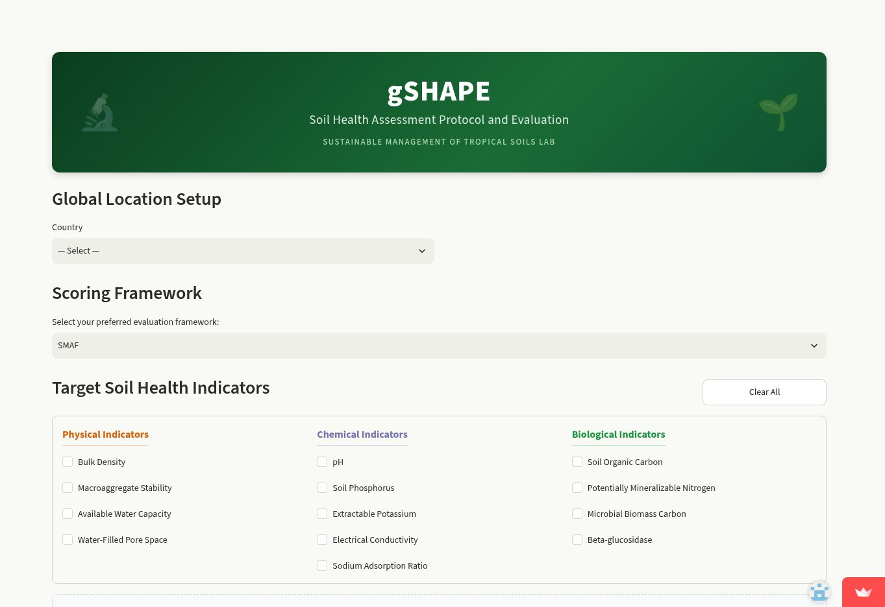

Set the location
Choose the country and complete any location fields requested by the tool.
Home/Research / Tools / gSHAPE
Research / Tools / gSHAPE
Soil Health Assessment Protocol and Evaluation — a web tool for soil health assessment in context.
Why it was developed
A soil measurement needs context. gSHAPE offers a browser interface for exploring evaluation frameworks and measured indicators alongside the location and inputs relevant to the selected assessment.
It brings physical, chemical, and biological indicators into one place for soil health assessment and benchmarking.
Launch gSHAPE
Getting started
Use your measured data. Follow the tool’s field labels and units for the selected framework.
Choose the country and complete any location fields requested by the tool.
Choose an available evaluation framework appropriate to your assessment.
Select the soil indicators you have measured, then enter the requested values and units.
Explore the scores and guidance shown by the tool. Interpret them within your soil and management context.
A look inside
The live app lets you choose a location, evaluation framework, and target soil health indicators.
Examples in the interface include bulk density, macroaggregate stability, and available water capacity.
Explore the toolExamples include pH, soil phosphorus, extractable potassium, and electrical conductivity.
Explore the toolExamples include soil organic carbon, potentially mineralizable nitrogen, and microbial biomass carbon.
Explore the tool